13. [Cours]: Expor uma base de dados na Web com o Spring MVC
Palavras-chave: arquitetura multicamadas, Spring, injeção de dependências, serviço web / jSON, cliente / servidor
13.1. Support
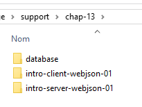 |  |
Os projetos deste capítulo encontram-se na pasta [support / chap-13]. O script SQL [dbintrospringdata.sql] permite criar a base MySQL necessária para os testes.
13.2. O papel do Spring MVC numa aplicação Web
Vamos contextualizar o Spring MVC no desenvolvimento de uma aplicação Web. Na maioria das vezes, esta será construída com base numa arquitetura multicamadas, tal como a seguinte:
 |
- a camada [Web] é a camada em contacto com o utilizador da aplicação Web. Este interage com a aplicação Web através de páginas Web visualizadas por um navegador. É nesta camada que se situa o Spring MVC e apenas nesta camada;
- a camada [métier] implementa as regras de gestão da aplicação, tais como o cálculo de um salário ou de uma fatura. Esta camada utiliza dados provenientes do utilizador através da camada [Web] e da camada SGBD através da camada [DAO];
- a camada [DAO] (Data Access Objects), a camada [ORM] (Object Relational Mapper) e o controlador JDBC gerem o acesso aos dados da camada SGBD. A camada [ORM] faz a ponte entre os objetos manipulados pela camada [DAO] e as linhas e colunas das tabelas de uma base de dados relacional. A especificação JPA (Java Persistence API) permite abstrair-se do ORM utilizado, caso este implemente essas especificações. Será esse o caso aqui e, doravante, designaremos a camada ORM como a camada JPA;
- a integração das camadas é feita pelo framework Spring;
13.3. O modelo de desenvolvimento do Spring MVC
O Spring MVC implementa o modelo de arquitetura denominado MVC (Modelo – Vista – Controlador) da seguinte forma:
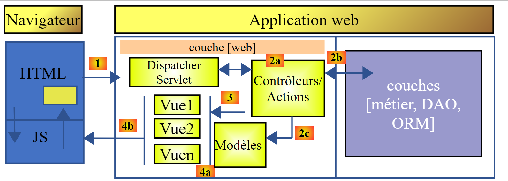 |
O processamento de um pedido de um cliente decorre da seguinte forma:
- pedido — os URL solicitados têm o formato http://machine:port/contexte/Action/param1/param2/....?p1=v1&p2=v2&... O [Front Controller] utiliza um ficheiro de configuração ou anotações Java para «encaminhar» o pedido para o controlador correto e para a ação correta dentro desse controlador. Para tal, utiliza o campo [Action] do URL. O restante do URL [/param1/param2/...] é constituído por parâmetros opcionais que serão transmitidos à ação. O C de MVC é, neste caso, a cadeia [Front Controller, Contrôleur, Action]. Se nenhum controlador puder processar a ação solicitada, o servidor Web responderá que a ação URL solicitada não foi encontrada.
- O processamento
- A ação selecionada pode utilizar os parâmetros parami que o [Front Controller] lhe transmitiu. Estes podem provir de várias fontes:
- do caminho [/param1/param2/...] do URL,
- dos parâmetros [p1=v1&p2=v2] do URL,
- de parâmetros enviados pelo navegador juntamente com o seu pedido;
- no processamento do pedido do utilizador, a ação pode necessitar da camada [métier] [2b]. Uma vez processado o pedido do cliente, este pode gerar várias respostas. Um exemplo clássico é:
- uma página de erro, caso a solicitação não tenha podido ser processada corretamente
- uma página de confirmação, caso contrário
- a ação solicita que uma determinada vista seja apresentada [3]. Esta vista irá apresentar dados a que se chama modelo da vista. É o M de MVC. A ação irá criar este modelo M [2c] e solicitar que uma vista V seja apresentada [3];
- resposta — a vista V selecionada utiliza o modelo M criado pela ação para inicializar as partes dinâmicas da resposta HTML que deve enviar ao cliente e, em seguida, envia essa resposta.
Para um serviço web / jSON, a arquitetura anterior é ligeiramente alterada:
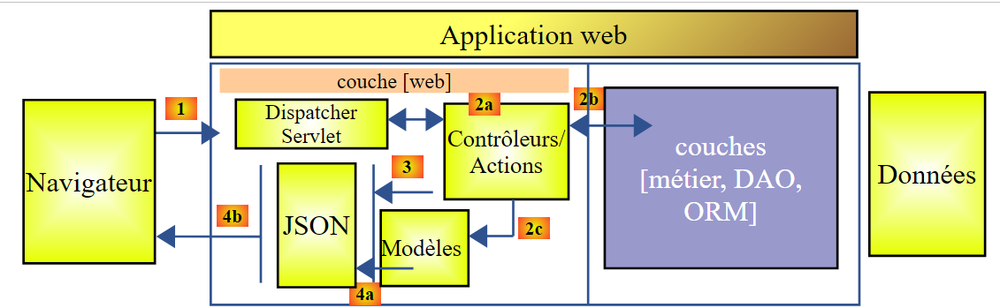 |
- em [4a], o modelo, que é uma classe Java, é transformado numa cadeia jSON por uma biblioteca jSON;
- em [4b], esta cadeia jSON é enviada para o navegador;
Agora, vamos esclarecer a relação entre a arquitetura web MVC e a arquitetura em camadas. Dependendo da definição que se atribuir ao modelo, estes dois conceitos podem ou não estar relacionados. Tomemos como exemplo uma aplicação web Spring MVC de uma camada:
 |
Se implementarmos a camada [Web] com o Spring MVC, teremos, de facto, uma arquitetura web MVC, mas não uma arquitetura multicamadas. Neste caso, a camada [web] encarregar-se-á de tudo: apresentação, lógica de negócio e acesso aos dados. São as ações que realizarão esse trabalho.
Agora, consideremos uma arquitetura web multicamadas:
 |
A camada [Web] pode ser implementada sem framework e sem seguir o modelo MVC. Temos, então, uma arquitetura multicamadas, mas a camada Web não implementa o modelo MVC.
Por exemplo, no mundo .NET, a camada [Web] acimaacima pode ser implementada com ASP.NET e MVC, obtendo-se assim uma arquitetura em camadas com uma camada [Web] do tipo MVC. Feito isto, é possível substituir esta camada ASP.NET MVC por uma camada ASP.NET clássica (WebForms), mantendo o resto (de negócio, DAO, ORM) inalterado. Temos então uma arquitetura em camadas com uma camada [Web] que já não é do tipo MVC.
Em MVC, afirmámos que o modelo M era o da vista V, c.a.d, ou seja, o conjunto de dados apresentados pela vista V. É fornecida outra definição do modelo M de MVC:
 |
Muitos autores consideram que o que se encontra à direita da camada [Web] constitui o modelo M do MVC. Para evitar ambiguidades, pode-se referir-se:
- do modelo do domínio quando nos referimos a tudo o que está à direita da camada [Web]
- do modelo da vista, quando nos referimos aos dados apresentados por uma vista V
Daqui em diante, o termo «modelo M» designará exclusivamente o modelo de uma vista V.
13.4. Um projeto web / jSON com Spring MVC
O site [http://spring.io/guides] disponibiliza tutoriais de introdução para explorar o ecossistema Spring. Vamos seguir um deles para descobrir a configuração Maven necessária para um projeto Spring MVC.
13.4.1. O projeto de demonstração
 |
- em [1], importamos um dos guias do Spring;
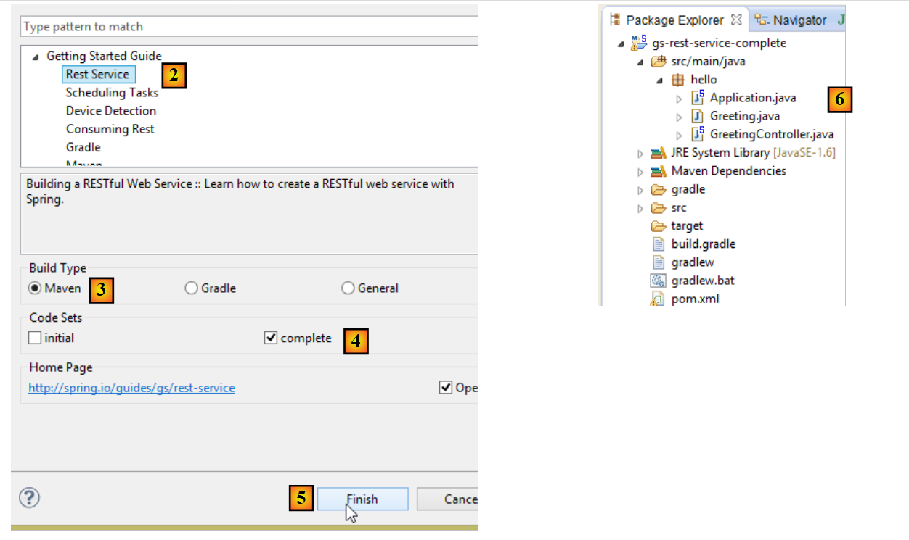 |
- em [2], selecionamos o exemplo [Rest Service];
- em [3], selecionamos o projeto Maven;
- em [4], selecionamos a versão final do guia;
- em [5], confirmamos;
- em [6], o projeto importado;
Os serviços web acessíveis através de URL padrão e que fornecem texto jSON são frequentemente designados por serviços REST (REpresentational State Transfer). Um serviço é considerado Restful se respeitar determinadas regras.
Vamos agora analisar o projeto importado, começando pela sua configuração Maven.
13.4.2. Configuração do Maven
O ficheiro [pom.xml] é o seguinte:
<?xml version="1.0" encoding="UTF-8"?>
<project xmlns="http://maven.apache.org/POM/4.0.0" xmlns:xsi="http://www.w3.org/2001/XMLSchema-instance"
xsi:schemaLocation="http://maven.apache.org/POM/4.0.0 http://maven.apache.org/xsd/maven-4.0.0.xsd">
<modelVersion>4.0.0</modelVersion>
<groupId>org.springframework</groupId>
<artifactId>gs-rest-service</artifactId>
<version>0.1.0</version>
<parent>
<groupId>org.springframework.boot</groupId>
<artifactId>spring-boot-starter-parent</artifactId>
<version>1.2.2.RELEASE</version>
</parent>
<dependencies>
<dependency>
<groupId>org.springframework.boot</groupId>
<artifactId>spring-boot-starter-web</artifactId>
</dependency>
</dependencies>
<properties>
<start-class>hello.Application</start-class>
</properties>
<build>
<plugins>
<plugin>
<groupId>org.springframework.boot</groupId>
<artifactId>spring-boot-maven-plugin</artifactId>
</plugin>
</plugins>
</build>
<repositories>
<repository>
<id>spring-releases</id>
<url>https://repo.spring.io/libs-release</url>
</repository>
</repositories>
<pluginRepositories>
<pluginRepository>
<id>spring-releases</id>
<url>https://repo.spring.io/libs-release</url>
</pluginRepository>
</pluginRepositories>
</project>
- linhas 6-8: as propriedades do projeto Maven. Falta uma baliza [<packaging>] que indique o tipo do ficheiro produzido pela compilação do Maven. Na ausência desta, é utilizado o tipo [jar]. A aplicação é, portanto, uma aplicação executável do tipo consola, e não uma aplicação web, caso em que o pacote seria [war];
- linhas 10-14: o projeto Maven tem um projeto pai [spring-boot-starter-parent]. É este que define a maior parte das dependências do projeto. Estas podem ser suficientes, caso em que não se adicionam mais, ou não, caso em que se adicionam as dependências em falta;
- linhas 17-20: o artefacto [spring-boot-starter-web] traz consigo as bibliotecas necessárias para um projeto Spring MVC do tipo serviço web, onde não há vistas geradas. Este artefacto inclui um número muito elevado de bibliotecas, incluindo as de um servidor Tomcat incorporado. É neste servidor que a aplicação será executada;
As bibliotecas incluídas nesta configuração são muito numerosas:
 |  |
Acima, vemos os três arquivos do servidor Tomcat.
13.4.3. A arquitetura de um serviço Spring [web / jSON]
Para um serviço web / jSON, o Spring MVC implementa o modelo MVC da seguinte forma:
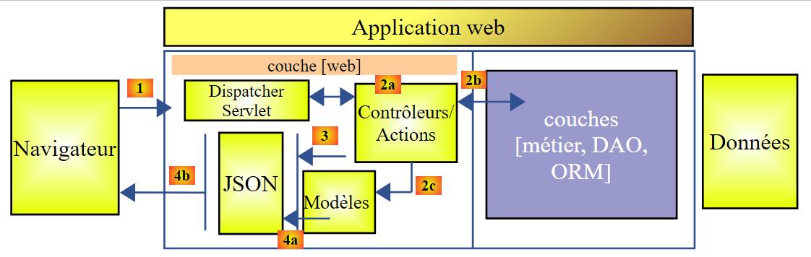 |
- em [4a], o modelo, que é uma classe Java, é transformado numa cadeia jSON por uma biblioteca jSON;
- em [4b], esta cadeia jSON é enviada para o navegador;
13.4.4. O controlador C
 |
A aplicação importada tem o seguinte controlador:
package hello;
import java.util.concurrent.atomic.AtomicLong;
import org.springframework.web.bind.annotation.RequestMapping;
import org.springframework.web.bind.annotation.RequestParam;
import org.springframework.web.bind.annotation.RestController;
@RestController
public class GreetingController {
private static final String template = "Hello, %s!";
private final AtomicLong counter = new AtomicLong();
@RequestMapping("/greeting")
public Greeting greeting(@RequestParam(value = "name", defaultValue = "World") String name) {
return new Greeting(counter.incrementAndGet(), String.format(template, name));
}
}
- linha 9: a anotação [@RestController] transforma a classe [GreetingController] num controlador Spring, ou seja, os seus métodos são registados para processar URL. Já vimos a anotação semelhante [@Controller]. O resultado dos métodos deste controlador era um tipo [String], que correspondia ao nome da vista a apresentar. Aqui é diferente. Os métodos de um controlador do tipo [@RestController] devolvem objetos que são serializados para serem enviados ao navegador. O tipo de serialização realizada depende da configuração do Spring MVC. Neste caso, serão serializados em jSON. É a presença de uma biblioteca jSON nas dependências do projeto que faz com que o Spring Boot, por autoconfiguração, configure o projeto desta forma;
- linha 14: a anotação [@RequestMapping] indica o URL que o método processa, neste caso o URL [/greeting];
- linha 15: já explicámos a anotação [@RequestParam]. O resultado devolvido pelo método é um objeto do tipo [Greeting].
- linha 12: um inteiro longo de tipo atómico. Isto significa que suporta acesso concorrente. Várias threads podem querer incrementar a variável [counter] ao mesmo tempo. Isto será feito de forma segura. Uma thread só pode ler o valor do contador se a thread que o está a modificar tiver concluído a sua modificação.
13.4.5. O modelo M
O modelo M produzido pelo método anterior é o seguinte objeto [Greeting]:
 |
package hello;
public class Greeting {
private final long id;
private final String content;
public Greeting(long id, String content) {
this.id = id;
this.content = content;
}
public long getId() {
return id;
}
public String getContent() {
return content;
}
}
A transformação jSON deste objeto criará a cadeia de caracteres {"id":n,"content":"texto"}. No final, a cadeia jSON produzida pelo método do controlador terá o seguinte formato:
ou
13.4.6. Execução
 |
A classe [Application.java] é a classe executável do projeto. O seu código é o seguinte:
package hello;
import org.springframework.boot.autoconfigure.EnableAutoConfiguration;
import org.springframework.boot.SpringApplication;
import org.springframework.context.annotation.ComponentScan;
@ComponentScan
@EnableAutoConfiguration
public class Application {
public static void main(String[] args) {
SpringApplication.run(Application.class, args);
}
}
Já abordámos e explicámos este código no exemplo anterior.
13.4.7. Execução do projeto
Vamos executar o projeto:
 |
Obtêm-se os seguintes registos da consola:
- linha 13: o servidor Tomcat inicia na porta 8080 (linha 12);
- linha 17: o servlet [DispatcherServlet] está presente;
- linha 20: o método [GreetingController.greeting] foi detetado;
Para testar a aplicação web, solicitamos o URL [http://localhost:8080/greeting]:
 |  |
Recebemos, de facto, a cadeia jSON esperada. Pode ser interessante ver os cabeçalhos HTTP enviados pelo servidor. Para tal, vamos utilizar a extensão do Chrome denominada [Advanced Rest Client] (Chrome / Ctrl-T / Menu [Applications] / [Advanced Rest Client] — ver Anexos, parágrafo 22.5):
 |
- em [1], o URL solicitado;
- em [2], é utilizado o método GET;
- em [3], a resposta jSON;
- em [4], o servidor indicou que estava a enviar uma resposta no formato jSON;
- em [5], solicita-se o mesmo URL, mas desta vez com um POST;
- em [7], as informações são enviadas ao servidor na forma [urlencoded];
- em [6], o parâmetro «name» com o seu valor;
- em [8], o navegador indica ao servidor que lhe está a enviar informações [urlencoded];
- em [9], a resposta jSON do servidor;
13.4.8. Criação de um arquivo executável
Vamos agora criar um arquivo executável:
 |
 |
- em [1]: executamos um alvo Maven;
- em [2]: existem dois objetivos (goals): [clean] para eliminar a pasta [target] do projeto Maven e [package] para a regenerar;
- em [3]: a pasta [target] gerada será criada nesta pasta;
- em [4]: é gerado o alvo;
Nos registos que aparecem na consola, é importante verificar se o plugin [spring-boot-maven-plugin] aparece. É este que gera o arquivo executável.
Na consola, acedemos à pasta gerada:
D:\Temp\wksSTS\gs-rest-service\target>dir
...
11/06/2014 15:30 <DIR> classes
11/06/2014 15:30 <DIR> generated-sources
11/06/2014 15:30 11 073 572 gs-rest-service-0.1.0.jar
11/06/2014 15:30 3 690 gs-rest-service-0.1.0.jar.original
11/06/2014 15:30 <DIR> maven-archiver
11/06/2014 15:30 <DIR> maven-status
...
- linha 5: o arquivo gerado;
Este arquivo é executado da seguinte forma:
D:\Temp\wksSTS\gs-rest-service-complete\target>java -jar gs-rest-service-0.1.0.jar
. ____ _ __ _ _
/\\ / ___'_ __ _ _(_)_ __ __ _ \ \ \ \
( ( )\___ | '_ | '_| | '_ \/ _` | \ \ \ \
\\/ ___)| |_)| | | | | || (_| | ) ) ) )
' |____| .__|_| |_|_| |_\__, | / / / /
=========|_|==============|___/=/_/_/_/
:: Spring Boot :: (v1.1.0.RELEASE)
2014-06-11 15:32:47.088 INFO 4972 --- [ main] hello.Application
: Starting Application on Gportpers3 with PID 4972 (D:\Temp\wk
sSTS\gs-rest-service-complete\target\gs-rest-service-0.1.0.jar started by ST in
D:\Temp\wksSTS\gs-rest-service-complete\target)
...
Agora que a aplicação web está em execução, pode-se aceder à mesma através de um navegador:
 |
13.4.9. Implementar a aplicação num servidor Tomcat
Tal como foi feito no projeto anterior, alteramos o ficheiro [pom.xml] da seguinte forma:
<?xml version="1.0" encoding="UTF-8"?>
<project xmlns="http://maven.apache.org/POM/4.0.0" xmlns:xsi="http://www.w3.org/2001/XMLSchema-instance"
xsi:schemaLocation="http://maven.apache.org/POM/4.0.0 http://maven.apache.org/xsd/maven-4.0.0.xsd">
<modelVersion>4.0.0</modelVersion>
<groupId>org.springframework</groupId>
<artifactId>gs-rest-service</artifactId>
<version>0.1.0</version>
<packaging>war</packaging>
...
</project>
- linha 9: é necessário indicar que se vai gerar um arquivo WAR (Web ARchive);
Além disso, é necessário configurar a aplicação web. Na ausência do ficheiro [web.xml], isto é feito através de uma classe que herda de [SpringBootServletInitializer]:
 |
A classe [ApplicationInitializer] é a seguinte:
package hello;
import org.springframework.boot.builder.SpringApplicationBuilder;
import org.springframework.boot.context.web.SpringBootServletInitializer;
public class ApplicationInitializer extends SpringBootServletInitializer {
@Override
protected SpringApplicationBuilder configure(SpringApplicationBuilder application) {
return application.sources(Application.class);
}
}
- linha 6: a classe [ApplicationInitializer] estende a classe [SpringBootServletInitializer];
- linha 9: o método [configure] é redefinido (linha 8);
- linha 10: indica-se a classe que configura o projeto;
Para executar o projeto, pode-se proceder da seguinte forma:
 |
- no [1-2], executa-se o projeto num dos servidores registados no IDE Eclipse;
Feito isto, pode-se aceder ao URL [http://localhost:8080/gs-rest-service/greeting/?name=Mitchell] num navegador:
 |
13.4.10. Conclusão
Apresentámos um tipo de projeto Spring MVC em que a aplicação web envia um fluxo jSON para o navegador. Vamos agora desenvolver uma aplicação web / jSON para disponibilizar na web a base de dados [dbintrospringdata] estudada no tutorial [Introduction à Spring Data].
13.5. Expor a base de dados [dbintrospringdata] na Web
13.5.1. Arquitetura do serviço web / jSON
Vamos implementar a seguinte arquitetura:
 |
As camadas [DAO] e [JPA] são implementadas pela aplicação escrita no tutorial [Introduction à Spring Data].
13.5.2. Instalação da base de dados
 |
O script SQL [dbintrospringdata.sql] permite criar a base de dados MySQL necessária para os testes.
13.5.3. O projeto Eclipse do serviço web / jSON
O projeto Eclipse do serviço web / jSON é o seguinte:
 |
Trata-se de um projeto Maven cujo ficheiro [pom.xml] é o seguinte:
<project xmlns="http://maven.apache.org/POM/4.0.0" xmlns:xsi="http://www.w3.org/2001/XMLSchema-instance"
xsi:schemaLocation="http://maven.apache.org/POM/4.0.0 http://maven.apache.org/xsd/maven-4.0.0.xsd">
<modelVersion>4.0.0</modelVersion>
<groupId>istia.st.webjson</groupId>
<artifactId>intro-server-webjson01</artifactId>
<version>0.0.1-SNAPSHOT</version>
<name>intro-server-webjson01</name>
<description>démo spring mvc</description>
<parent>
<groupId>org.springframework.boot</groupId>
<artifactId>spring-boot-starter-parent</artifactId>
<version>1.2.7.RELEASE</version>
</parent>
<dependencies>
<dependency>
<groupId>istia.st.springdata</groupId>
<artifactId>intro-spring-data-01</artifactId>
<version>0.0.1-SNAPSHOT</version>
</dependency>
<dependency>
<groupId>org.springframework.boot</groupId>
<artifactId>spring-boot-starter-web</artifactId>
</dependency>
<dependency>
<groupId>org.springframework.boot</groupId>
<artifactId>spring-boot-starter</artifactId>
</dependency>
</dependencies>
<build>
<plugins>
<plugin>
<groupId>org.springframework.boot</groupId>
<artifactId>spring-boot-maven-plugin</artifactId>
</plugin>
<plugin>
<groupId>org.apache.maven.plugins</groupId>
<artifactId>maven-surefire-plugin</artifactId>
<version>2.18.1</version>
</plugin>
</plugins>
</build>
</project>
- linhas 11-15: o projeto Maven pai já utilizado para a camada [DAO];
- linhas 18-22: a dependência da camada [DAO];
- linhas 23-26: a dependência do artefacto [spring-boot-starter-web]. Este artefacto traz consigo todas as dependências necessárias para a criação de um serviço web / jSON. Também traz bibliotecas desnecessárias. Seria, portanto, necessária uma configuração mais precisa. No entanto, esta configuração é prática para começar;
- linhas 28-30: a dependência do artefacto [spring-boot-starter] permite gerir as anotações do Spring Boot;
As dependências introduzidas por esta configuração são as seguintes:
 |
- no [1], verifica-se que o Eclipse detetou a dependência do arquivo do projeto [intro-spring-data-01];
As dependências acima referem-se tanto à camada [DAO] como à camada [web].
13.5.3.1. Configuração da camada [web]
A camada [web] é configurada por um ficheiro [AppConfig]:
 |
A classe [WebConfig] configura a camada [web]:
package spring.webjson.config;
import org.springframework.beans.factory.annotation.Autowired;
import org.springframework.boot.context.embedded.EmbeddedServletContainerFactory;
import org.springframework.boot.context.embedded.ServletRegistrationBean;
import org.springframework.boot.context.embedded.tomcat.TomcatEmbeddedServletContainerFactory;
import org.springframework.context.ApplicationContext;
import org.springframework.context.annotation.Bean;
import org.springframework.web.context.WebApplicationContext;
import org.springframework.web.servlet.DispatcherServlet;
import org.springframework.web.servlet.config.annotation.EnableWebMvc;
import org.springframework.web.servlet.config.annotation.WebMvcConfigurerAdapter;
import com.fasterxml.jackson.databind.ObjectMapper;
import com.fasterxml.jackson.databind.ser.impl.SimpleBeanPropertyFilter;
import com.fasterxml.jackson.databind.ser.impl.SimpleFilterProvider;
@EnableWebMvc
public class WebConfig extends WebMvcConfigurerAdapter {
// -------------------------------- configuração da camada [web]
@Autowired
private ApplicationContext context;
@Bean
public DispatcherServlet dispatcherServlet() {
DispatcherServlet servlet = new DispatcherServlet((WebApplicationContext) context);
return servlet;
}
@Bean
public ServletRegistrationBean servletRegistrationBean(DispatcherServlet dispatcherServlet) {
return new ServletRegistrationBean(dispatcherServlet, "/*");
}
@Bean
public EmbeddedServletContainerFactory embeddedServletContainerFactory() {
return new TomcatEmbeddedServletContainerFactory("", 8080);
}
// filtros jSON
@Bean(name = "jsonMapper")
public ObjectMapper jsonMapper() {
return new ObjectMapper();
}
@Bean(name = "jsonMapperCategorieWithProduits")
public ObjectMapper jsonMapperCategorieWithProduits() {
// mapeador jSON
ObjectMapper mapper = new ObjectMapper();
// filtros
mapper.setFilters(
new SimpleFilterProvider().addFilter("jsonFilterCategorie", SimpleBeanPropertyFilter.serializeAllExcept())
.addFilter("jsonFilterProduit", SimpleBeanPropertyFilter.serializeAllExcept("categorie")));
// resultado
return mapper;
}
@Bean(name = "jsonMapperProduitWithCategorie")
public ObjectMapper jsonMapperProduitWithCategorie() {
// mapeador jSON
ObjectMapper mapper = new ObjectMapper();
// filtros
mapper.setFilters(
new SimpleFilterProvider().addFilter("jsonFilterProduit", SimpleBeanPropertyFilter.serializeAllExcept())
.addFilter("jsonFilterCategorie", SimpleBeanPropertyFilter.serializeAllExcept("produits")));
// resultado
return mapper;
}
@Bean(name = "jsonMapperCategorieWithoutProduits")
public ObjectMapper jsonMapperCategorieWithoutProduits() {
// mapeador jSON
ObjectMapper mapper = new ObjectMapper();
// filtros
mapper.setFilters(new SimpleFilterProvider().addFilter("jsonFilterCategorie",
SimpleBeanPropertyFilter.serializeAllExcept("produits")));
// resultado
return mapper;
}
@Bean(name = "jsonMapperProduitWithoutCategorie")
public ObjectMapper jsonMapperProduitWithoutCategorie() {
// mapeador jSON
ObjectMapper mapper = new ObjectMapper();
// filtros
mapper.setFilters(new SimpleFilterProvider().addFilter("jsonFilterProduit",
SimpleBeanPropertyFilter.serializeAllExcept("categorie")));
// resultado
return mapper;
}
}
- linha 18: a anotação [@EnableWebMvc] induz configurações automáticas para o framework Spring MVC;
- linha 19: a classe [WebConfig] estende a classe Spring [WebMvcConfigurerAdapter] para redefinir alguns beans (linhas 26-40);
- linhas 22-23: injeção do contexto Spring;
- linhas 25-29: definição do servlet do framework Spring MVC, que encaminha as solicitações HTTP para o controlador e o método corretos. [DispatcherServlet] é uma classe do Spring;
- linhas 31-34: indica-se que esta servlet processa todas as URL;
- linhas 36-39: é a presença deste bean que irá ativar o servidor Tomcat presente nos arquivos do projeto. Este aguardará as solicitações na porta 8080;
- linhas 42-91: beans que serão utilizados para gerir filtros jSON;
- linhas 42-45: um mapeador jSON sem filtros;
- linhas 47-57: o mapeador jSON, que permite apresentar uma categoria com os respetivos produtos. Note-se que, quando se solicita uma categoria com os seus produtos, é necessário configurar tanto o filtro jSON da classe [Categorie] como o da classe [Produit]. É sempre assim. Ao serializar/deserializar uma classe em jSON, é necessário configurar o filtro jSON da classe e os filtros de todas as dependências a incluir nessa classe;
- linhas 59-69: o mapeador jSON, que permite ter um produto com a sua categoria;
- linhas 71-80: o mapeador jSON, que permite apresentar uma categoria sem os seus produtos;
- linhas 82-91: o mapeador jSON, que permite obter um produto sem a sua categoria;
A classe [AppConfig] configura toda a aplicação, ou seja, as camadas [web] e [DAO]:
package spring.webjson.config;
import org.springframework.context.annotation.ComponentScan;
import org.springframework.context.annotation.Import;
import spring.data.config.DaoConfig;
@ComponentScan(basePackages = { "spring.webjson" })
@Import({ DaoConfig.class, WebConfig.class})
public class AppConfig {
}
- linha 9: importam-se os beans da camada [DAO] e os da camada [web];
- linha 8: indica em que pacotes se encontram outros beans Spring;
Note-se que, em nenhum momento, utilizámos a anotação [@EnableAutoConfiguration]. Preferimos controlar a configuração nós próprios.
13.5.4. O modelo da aplicação
 |
A classe [ApplicationModel] é a seguinte:
package spring.webjson.models;
import java.util.List;
import org.springframework.beans.factory.annotation.Autowired;
import org.springframework.stereotype.Component;
import spring.data.dao.IDao;
import spring.data.entities.Categorie;
import spring.data.entities.Produit;
@Component
public class ApplicationModel implements IDao {
// a camada [DAO]
@Autowired
private IDao dao;
@Override
public void addProduits(List<Produit> produits) {
dao.addProduits(produits);
}
@Override
public void deleteAllProduits() {
dao.deleteAllProduits();
}
@Override
public void updateProduits(List<Produit> produits) {
dao.updateProduits(produits);
}
@Override
public List<Produit> getAllProduits() {
return dao.getAllProduits();
}
@Override
public void addCategories(List<Categorie> categories) {
dao.addCategories(categories);
}
@Override
public void deleteAllCategories() {
dao.deleteAllCategories();
}
@Override
public void updateCategories(List<Categorie> categories) {
dao.updateCategories(categories);
}
@Override
public List<Categorie> getAllCategories() {
return dao.getAllCategories();
}
@Override
public Produit getProduitByIdWithCategorie(Long idProduit) {
return dao.getProduitByIdWithCategorie(idProduit);
}
@Override
public Produit getProduitByNameWithCategorie(String nom) {
return dao.getProduitByNameWithCategorie(nom);
}
@Override
public Categorie getCategorieByIdWithProduits(Long idCategorie) {
return dao.getCategorieByIdWithProduits(idCategorie);
}
@Override
public Categorie getCategorieByNameWithProduits(String nom) {
return dao.getCategorieByNameWithProduits(nom);
}
@Override
public Produit getProduitByIdWithoutCategorie(Long idProduit) {
return dao.getProduitByIdWithoutCategorie(idProduit);
}
@Override
public Categorie getCategorieByIdWithoutProduits(Long idCategorie) {
return dao.getCategorieByIdWithoutProduits(idCategorie);
}
@Override
public Produit getProduitByNameWithoutCategorie(String nom) {
return dao.getProduitByNameWithoutCategorie(nom);
}
@Override
public Categorie getCategorieByNameWithoutProduits(String nom) {
return dao.getCategorieByNameWithoutProduits(nom);
}
}
- linha 12: a classe é um singleton do Spring;
- linha 13: que implementa a interface [IDao] da camada [DAO];
- linhas 16-17: injeção de uma referência na camada [DAO];
- linhas 19-99: implementação da interface [IDao];
A arquitetura da camada web evolui da seguinte forma:
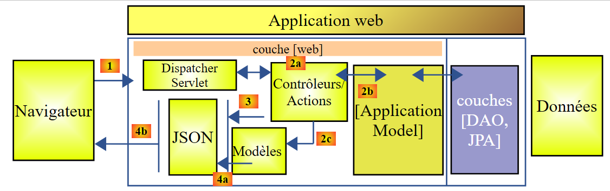 |
- em [2b], os métodos do(s) controlador(es) comunicam com o singleton [ApplicationModel];
Esta estratégia proporciona flexibilidade na gestão de um eventual cache. A classe [ApplicationModel] pode ser utilizada para armazenar informações obtidas da camada [DAO] ou ainda dados de configuração. Isto pode ser útil quando não se tem controlo sobre a camada [DAO]. Esta estratégia de cache pode evoluir ao longo do tempo. As alterações não terão qualquer impacto no código do(s) controlador(es).
13.5.5. O controlador
 |
 |
Aqui temos apenas um controlador, a classe [MyController].
13.5.5.1. As URL expostas
As instâncias da classe URL expostas por este controlador são as seguintes:
| Adiciona produtos à base de dados. Estes são publicados. A resposta é a cadeia jSON, que contém a lista dos produtos adicionados com a respetiva chave primária. |
| Elimina todos os produtos da base de dados. |
| Atualiza os produtos na base de dados. Estes são publicados. A resposta é a cadeia jSON da lista de produtos atualizados. |
| Obtém a cadeia de caracteres jSON de todos os produtos. |
| Adiciona categorias à base de dados. Estas são publicadas. A resposta é a cadeia jSON da lista de categorias adicionadas com a respetiva chave primária. Se as categorias contiverem produtos, estes também são adicionados à base de dados. |
| Elimina todas as categorias da base de dados, bem como todos os produtos associados a elas. Depois, a base de dados fica vazia. |
| Atualiza as categorias na base de dados. Estas são publicadas. O resultado é a lista das categorias atualizadas. Se as categorias contiverem produtos, estes também são atualizados na base de dados. Devolve a cadeia jSON das categorias alteradas; |
| Obtém a cadeia de caracteres jSON de todas as categorias. |
| Obtém a cadeia de caracteres jSON de um produto identificado pelo seu ID, juntamente com a sua categoria. |
| Obtém a cadeia de caracteres jSON de um produto identificado pelo seu ID, sem a sua categoria. |
| Recupera a cadeia de caracteres jSON de um produto identificado pelo seu nome, juntamente com a sua categoria. |
| Obtém a cadeia jSON de um produto designado pelo seu nome, sem a sua categoria. |
| Recupera a cadeia de caracteres jSON de uma categoria designada pelo seu ID, juntamente com os seus produtos. |
| Recupera a cadeia jSON de uma categoria designada pelo seu nome, juntamente com os seus produtos. |
| Recupera a cadeia jSON de uma categoria designada pelo seu nome, sem os seus produtos. |
| Recupera a cadeia jSON de uma categoria designada pelo seu ID, sem os respetivos produtos. |
Os URL apresentados correspondem aos métodos da interface [IDao] da camada [DAO]. Os métodos do serviço web / jSON seguem todos o mesmo modelo. Vamos analisar alguns deles.
13.5.5.2. A estrutura do controlador
A estrutura básica do controlador é a seguinte:
package spring.webjson.service;
import java.util.ArrayList;
import java.util.List;
import java.util.Set;
import javax.servlet.http.HttpServletRequest;
import org.springframework.beans.factory.annotation.Autowired;
import org.springframework.beans.factory.annotation.Qualifier;
import org.springframework.stereotype.Controller;
import org.springframework.web.bind.annotation.PathVariable;
import org.springframework.web.bind.annotation.RequestMapping;
import org.springframework.web.bind.annotation.RequestMethod;
import org.springframework.web.bind.annotation.ResponseBody;
import com.fasterxml.jackson.core.JsonProcessingException;
import com.fasterxml.jackson.core.type.TypeReference;
import com.fasterxml.jackson.databind.ObjectMapper;
import com.google.common.io.CharStreams;
import spring.data.dao.DaoException;
import spring.data.entities.Categorie;
import spring.data.entities.Produit;
import spring.webjson.models.ApplicationModel;
import spring.webjson.models.Response;
@Controller
public class MyController {
// dependências Spring
@Autowired
private ApplicationModel application;
// filtros jSON
@Autowired
@Qualifier("jsonMapper")
private ObjectMapper jsonMapper;
@Autowired
@Qualifier("jsonMapperCategorieWithProduits")
private ObjectMapper jsonMapperCategorieWithProduits;
@Autowired
@Qualifier("jsonMapperProduitWithCategorie")
private ObjectMapper jsonMapperProduitWithCategorie;
@Autowired
@Qualifier("jsonMapperCategorieWithoutProduits")
private ObjectMapper jsonMapperCategorieWithoutProduits;
@Autowired
@Qualifier("jsonMapperProduitWithoutCategorie")
private ObjectMapper jsonMapperProduitWithoutCategorie;
// a classe [MyController] é um singleton e só é instanciada uma vez o bean
public MyController() {
// System.out.println("MyController");
}
@RequestMapping(value = "/addProduits", method = RequestMethod.POST, consumes = "application/json; charset=UTF-8", produces = "application/json; charset=UTF-8")
@ResponseBody
public String addProduits(HttpServletRequest request) throws JsonProcessingException {
...
}
- linha 28: a anotação [@Controller] transforma a classe num componente Spring;
- linhas 32-33: injeção de uma referência na classe [ApplicationModel];
- linhas 36-50: injeções de referências nos mapeadores jSON;
- linha 58: o URL exposto é o [/addProduits]. O cliente deve utilizar um método [POST] para efetuar a sua solicitação (method = RequestMethod.POST). Deve enviar o valor enviado sob a forma de uma cadeia de caracteres jSON (consumes = "application/json; charset=UTF-8"). O próprio método devolve a resposta ao cliente (linha 59). Será uma cadeia de caracteres (linha 60). O cabeçalho HTTP [Content-type : application/json; charset=UTF-8] será enviado ao cliente para lhe indicar que irá receber uma cadeia de caracteres jSON (linha 58);
- linha 60: o método [addProduits] devolve a cadeia jSON da lista de produtos adicionados à base de dados;
13.5.5.3. A resposta dos métodos do controlador
Todos os métodos do controlador devolvem a seguinte resposta do tipo [Response]:
 |
package spring.webjson.service;
import java.util.List;
public class Response<T> {
// ----------------- propriedades
// estado da operação
private int status;
// eventuais mensagens de erro
private List<String> messages;
// o corpo da resposta
private T body;
// construtores
public Response() {
}
public Response(int status, List<String> messages, T body) {
this.status = status;
this.messages = messages;
this.body = body;
}
// getters e setters
...
}
- linha 5: a resposta encapsula um tipo T;
- linha 13: a resposta do tipo T;
- linhas 9-11: é possível que um método encontre uma exceção. Nesse caso, devolverá uma resposta com:
- linha 9: status!=0;
- linha 11: a lista de erros encontrados;
13.5.5.4. L'URL [/addProduits]
L'URL [/addProduits] é processada pelo seguinte método:
@RequestMapping(value = "/addProduits", method = RequestMethod.POST, consumes = "application/json; charset=UTF-8", produces = "application/json; charset=UTF-8")
@ResponseBody
public String addProduits(HttpServletRequest request) throws JsonProcessingException {
// resposta
Response<List<Produit>> response;
try {
// recupera-se o valor enviado
String body = CharStreams.toString(request.getReader());
List<Produit> produits = jsonMapperProduitWithoutCategorie.readValue(body, new TypeReference<List<Produit>>() {
});
// restabelece-se a ligação entre produtos e categorias
for (Produit produit : produits) {
produit.setCategorie(application.getCategorieByIdWithoutProduits(produit.getIdCategorie()));
}
// persistência dos produtos
application.addProduits(produits);
response = new Respon se<List<Produit>>(0, null, produits);
} catch (DaoException e1) {
response = new Response<List<Produit>>(1000, e1.getErreurs(), null);
} catch (Exception e2) {
response = new Response<List<Produit>>(1000, getErreursForException(e2), null);
}
// resposta jSON
return jsonMapperProduitWithoutCategorie.writeValueAsString(response);
}
- linha 3: o método aceita como parâmetro o [HttpServletRequest request], que encapsula todas as informações sobre o pedido do cliente;
- linha 5: a resposta que será enviada ao cliente: uma lista de produtos;
- linha 8: recupera-se o valor enviado. A classe [CharStreams] pertence à biblioteca [Google Guava], cuja referência foi adicionada no ficheiro [pom.xml]. Recebe-se a cadeia jSON enviada pelo cliente. É necessário deserializá-la para poder utilizá-la;
- linhas 8-10: a deserialização é efetuada. Obtém-se uma lista de produtos em que cada produto tem um campo [categorie=null];
- linhas 12-14: reinicializa-se o campo [categorie] de todos os produtos da lista. Para tal, utiliza-se o campo [idCategorie] do produto, que, por sua vez, está inicializado;
- linha 16: os produtos são inseridos na base de dados;
- linha 17: o objeto [response] é inicializado com a lista de produtos;
- linhas 18-19: caso em que o método encontra uma exceção da camada [DAO]. Inicializa-se a resposta com [status=1000] (código de erro) [messages=e1.getMessages()], ou seja, transmite-se ao cliente a lista de erros encontrados no lado do servidor;
- linhas 20-21: caso em que o método encontra outro tipo de exceção. Inicializa-se a resposta com [status=1000] (código de erro) [messages=getErreursForException(e)], em que [getErreursForException] é um método privado da classe que devolve a lista de erros associados às exceções da pilha de exceções de e, e [body=null];
- linha 24: devolve-se a cadeia jSON da resposta;
13.5.5.5. O URL [/getAllProduits]
A URL [/getAllProduits] é processada pelo método seguinte:
@RequestMapping(value = "/getAllProduits", method = RequestMethod.GET, produces = "application/json; charset=UTF-8")
@ResponseBody
public String getAllProduits() throws JsonProcessingException {
// resposta
Response<List<Produit>> response;
try {
response = new Response<List<Produit>>(0, null, application.getAllProduits());
} catch (DaoException e1) {
response = new Response<List<Produit>>(1003, e1.getErreurs(), null);
} catch (Exception e2) {
response = new Response<List<Produit>>(1003, getErreursForException(e2), null);
}
// resposta jSON
return jsonMapperProduitWithoutCategorie.writeValueAsString(response);
}
- linha 1: o URL [/getAllProduits] é solicitado com uma operação [GET]. Esta gera o jSON;
- linha 2: o próprio método envia a resposta jSON ao cliente;
- linha 5: o método envia a cadeia jSON de um tipo [Response<List<Produit>>];
- linha 7: os produtos são solicitados sem a respetiva categoria;
- linhas 8-12: em caso de erro, a resposta é inicializada com um código e mensagens de erro;
- linha 14: a resposta jSON é enviada ao cliente;
13.5.5.6. Conclusion
Não iremos apresentar os restantes métodos do controlador. São semelhantes a um ou outro dos dois métodos que acabámos de apresentar.
13.5.6. A classe de execução do serviço web / jSON
 |
A classe [Boot] é a classe executável do projeto:
package spring.webjson.boot;
import org.springframework.boot.SpringApplication;
import spring.webjson.server.config.AppConfig;
public class Boot {
public static void main(String[] args) {
SpringApplication.run(AppConfig.class, args);
}
}
- linha 10: o método estático [SpringApplication.run] é executado. A classe [SpringApplication] é uma classe do projeto [Spring Boot] (linha 3). São-lhe passados dois parâmetros:
- [AppConfig.class]: a classe que configura toda a aplicação;
- [args]: os eventuais argumentos passados ao método [main], linha 9. Este parâmetro não é utilizado aqui;
Ao executar esta classe, obtêm-se os seguintes registos:
- linhas 17-19: arranque do servidor Tomcat que irá executar o serviço web / jSON;
- linhas 25-33: construção da camada [DAO];
- linhas 32-51: as URL expostas são detetadas;
13.5.7. Testes do serviço web / jSON
Para realizar os testes, geramos a base de dados MySQL [dbintrospringdata] a partir do script SQL [dbintrospringdata.sql]:
 |
Feito isto, utilizamos o cliente [Advanced Rest Client] (ver parágrafo 22.5) para consultar as URL disponibilizadas pelo serviço web / jSON (o serviço web / jSON deve estar em execução).
 |
- no [1-3], solicitamos o URL [/getAllCategories] através de um comando HTTP GET;
Obtemos a seguinte resposta:
 |
- em [1], a solicitação HTTP do cliente;
- em [2], a resposta HTTP do servidor;
- em [3], o estado [200 OK] indica que o servidor processou corretamente o pedido;
- em [4], a resposta jSON do servidor;
A resposta completa jSON é a seguinte:
{"status":0,"messages":null,"body":[{"id":415,"version":0,"nom":"categorie0","produits":[{"id":1849,"version":0,"nom":"produit00","idCategorie":415,"prix":100.0,"description":"desc00"},{"id":1850,"version":0,"nom":"produit01","idCategorie":415,"prix":101.0,"description":"desc01"},{"id":1851,"version":0,"nom":"produit02","idCategorie":415,"prix":102.0,"description":"desc02"},{"id":1852,"version":0,"nom":"produit03","idCategorie":415,"prix":103.0,"description":"desc03"},{"id":1853,"version":0,"nom":"produit04","idCategorie":415,"prix":104.0,"description":"desc04"}]},{"id":416,"version":0,"nom":"categorie1","produits":[{"id":1856,"version":0,"nom":"produit12","idCategorie":416,"prix":112.0,"description":"desc12"},{"id":1857,"version":0,"nom":"produit13","idCategorie":416,"prix":113.0,"description":"desc13"},{"id":1858,"version":0,"nom":"produit14","idCategorie":416,"prix":114.0,"description":"desc14"},{"id":1854,"version":0,"nom":"produit10","idCategorie":416,"prix":110.0,"description":"desc10"},{"id":1855,"version":0,"nom":"produit11","idCategorie":416,"prix":111.0,"description":"desc11"}]}]}
- status:0 significa que não ocorreram erros do lado do servidor;
- mensagens: null significa que não há mensagens de erro;
- body: é o corpo da resposta, neste caso a lista de categorias com os respetivos produtos. Existem duas categorias, cada uma com 5 produtos;
Vamos adicionar à categoria [categorie1] o produto [produit15]. Para tal, vamos utilizar o URL [/addCategories], que tem o seguinte código:
@RequestMapping(value = "/addCategories", method = RequestMethod.POST, consumes = "application/json; charset=UTF-8", produces = "application/json; charset=UTF-8")
@ResponseBody
public String addCategories(HttpServletRequest request) throws JsonProcessingException {
Response<List<Categorie>> response;
ObjectMapper mapper = context.getBean(ObjectMapper.class);
// as categorias são mantidas
try {
// recupera-se o valor publicado
String body = CharStreams.toString(request.getReader());
mapper.setFilters(jsonFilterCategorieWithProduits);
List<Categorie> categories = mapper.readValue(body, new TypeReference<List<Categorie>>() {
});
// restabelece-se a ligação entre produtos e categorias
for (Categorie categorie : categories) {
Set<Produit> produits = categorie.getProduits();
if (produits != null) {
for (Produit produit : categorie.getProduits()) {
produit.setCategorie(categorie);
}
}
}
// as categorias são mantidas
application.addCategories(categories);
response = new Response<List<Categorie>>(0, null, categories);
} catch (Exception e) {
response = new Response<List<Categorie>>(1004, getErreursForException(e), null);
}
// resposta jSON
return mapper.writeValueAsString(response);
}
- linha 1: o cliente deve criar um POST e o valor enviado deve ser uma cadeia jSON;
- linhas 9-12: o valor enviado deve ser uma lista de categorias com os respetivos produtos associados;
Vamos criar uma categoria [categorie2] com um produto [produit21]. A cadeia jSON a enviar é, então, a seguinte:
[{"id":null,"version":0,"nom":"categorie2","produits":[{"id":null,"version":0,"nom":"produit21","idCategorie":null,"prix":111.0,"description":"desc21"}]}]
A solicitação ao serviço web /jSON é efetuada da seguinte forma:
 |
- em [1], o URL solicitado;
- em [2], é solicitada através de uma operação POST;
- em [3], a cadeia jSON é enviada;
- em [4], indica-se ao servidor que lhe será enviado jSON;
A resposta do servidor é a seguinte:
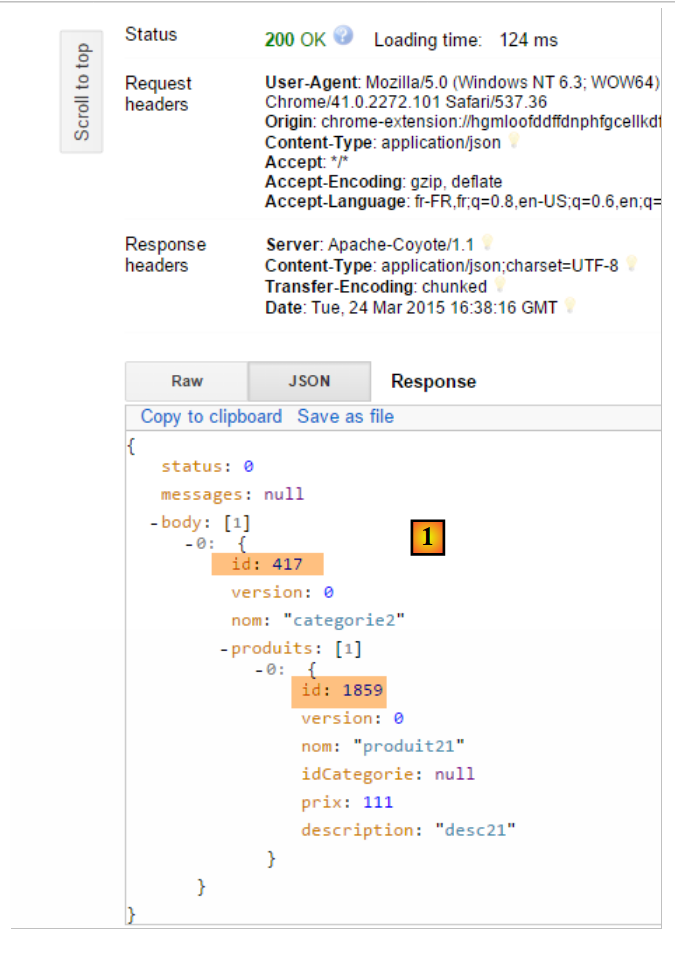 |
- em [1], verifica-se que tanto a categoria como o produto têm agora uma chave primária, o que indica que provavelmente foram inseridos na base de dados. Vamos verificar isso utilizando o URL e o [/getCategorieByNameWithProduits/categorie2]:
 |
Obtemos o seguinte resultado:
 |
De facto, obtivemos a categoria [categorie2] com o seu único produto [produit21]. Também é possível consultar apenas o produto. Para tal, vamos utilizar o URL [/getProduitByIdWithoutCategorie/1859]:
 |
Obtemos o seguinte resultado:
 |
Todas as operações [GET] podem ser realizadas num simples navegador:
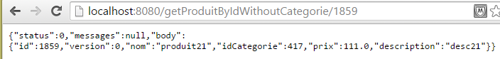 |
Convidamos o leitor a testar as outras operações URL do serviço web / json.
13.6. Um cliente programado para o serviço web / jSON
Agora que a base [dbintrospringdata] está disponível na Web, vamos escrever uma aplicação que a utilize. Teremos então a seguinte arquitetura cliente/servidor:
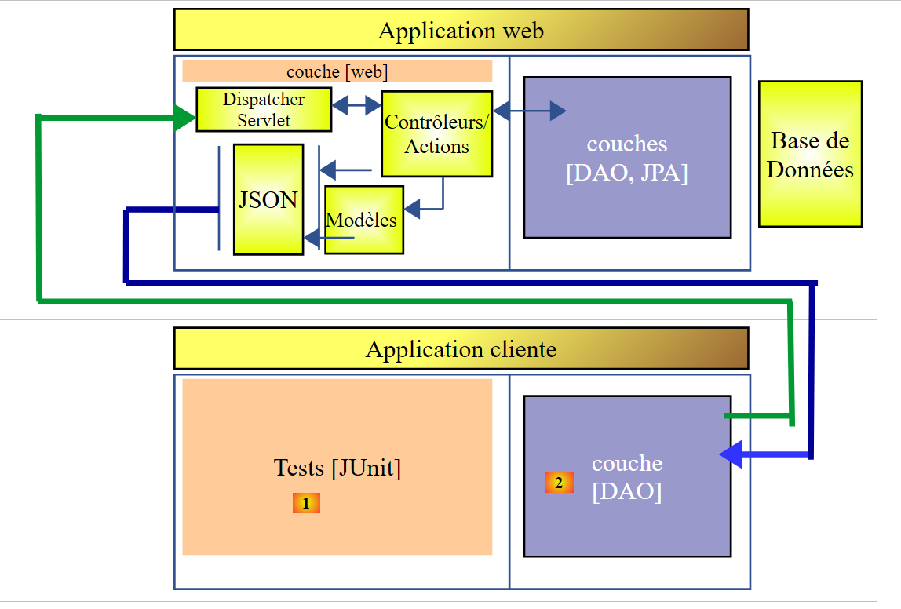 |
A aplicação cliente terá duas camadas:
- uma camada [DAO] [2] para comunicar com a aplicação web / jSON que expõe a base de dados;
- uma camada de testes JUnit [1] para verificar se o cliente e o servidor estão a funcionar corretamente;
13.6.1. O projeto Eclipse
O projeto Eclipse do cliente é o seguinte:
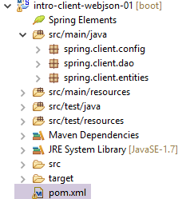 |
- a pasta [src/main/java] implementa a camada [DAO];
- a pasta [src/test/java] implementa os testes JUnit;
13.6.2. Configuração Maven do projeto
O projeto é um projeto Maven configurado pelo seguinte ficheiro [pom.xml]:
<project xmlns="http://maven.apache.org/POM/4.0.0" xmlns:xsi="http://www.w3.org/2001/XMLSchema-instance"
xsi:schemaLocation="http://maven.apache.org/POM/4.0.0 http://maven.apache.org/xsd/maven-4.0.0.xsd">
<modelVersion>4.0.0</modelVersion>
<groupId>istia.st.webjson</groupId>
<artifactId>intro-client-webjson-01</artifactId>
<version>0.0.1-SNAPSHOT</version>
<description>Client console du serveur web / jSON</description>
<properties>
<project.build.sourceEncoding>UTF-8</project.build.sourceEncoding>
<java.version>1.8</java.version>
</properties>
<parent>
<groupId>org.springframework.boot</groupId>
<artifactId>spring-boot-starter-parent</artifactId>
<version>1.2.7.RELEASE</version>
</parent>
<dependencies>
<!-- Spring -->
<dependency>
<groupId>org.springframework</groupId>
<artifactId>spring-web</artifactId>
</dependency>
<!-- biblioteca jSON utilizada pelo Spring -->
<dependency>
<groupId>com.fasterxml.jackson.core</groupId>
<artifactId>jackson-core</artifactId>
</dependency>
<dependency>
<groupId>com.fasterxml.jackson.core</groupId>
<artifactId>jackson-databind</artifactId>
</dependency>
<!-- componente utilizado pelo Spring RestTemplate -->
<dependency>
<groupId>org.apache.httpcomponents</groupId>
<artifactId>httpclient</artifactId>
</dependency>
<!-- Google Guava -->
<dependency>
<groupId>com.google.guava</groupId>
<artifactId>guava</artifactId>
<version>16.0.1</version>
<scope>test</scope>
</dependency>
<!-- biblioteca de registos -->
<dependency>
<groupId>org.springframework.boot</groupId>
<artifactId>spring-boot-starter-logging</artifactId>
</dependency>
<!-- Teste do Spring Boot -->
<dependency>
<groupId>org.springframework.boot</groupId>
<artifactId>spring-boot-starter-test</artifactId>
<scope>test</scope>
</dependency>
<!-- Spring Boot -->
<dependency>
<groupId>org.springframework.boot</groupId>
<artifactId>spring-boot</artifactId>
<scope>test</scope>
</dependency>
</dependencies>
<!-- plugins -->
<build>
<plugins>
<plugin>
<artifactId>maven-assembly-plugin</artifactId>
<configuration>
<descriptorRefs>
<descriptorRef>jar-with-dependencies</descriptorRef>
</descriptorRefs>
</configuration>
</plugin>
<plugin>
<groupId>org.apache.maven.plugins</groupId>
<artifactId>maven-surefire-plugin</artifactId>
<version>2.18.1</version>
</plugin>
</plugins>
</build>
<name>intro-client-webjson-01</name>
</project>
- linhas 14-18: o projeto Maven pai [spring-boot-starter-parent], que nos permite definir várias dependências sem especificar as respetivas versões, uma vez que estas são definidas no projeto pai;
- linhas 22-25: embora não estejamos a escrever uma aplicação web, precisamos da dependência [spring-web], que traz consigo a classe [RestTemplate], que permite interagir facilmente com uma aplicação web / jSON;
- linhas 27-34: uma biblioteca jSON;
- linhas 36-39: uma dependência que nos permitirá associar um timeout às solicitações HTTP do cliente. Um timeout é o tempo máximo de espera pela resposta do servidor. Passado esse tempo, o cliente sinaliza um erro de timeout, lançando uma exceção;
- linhas 41-46: a biblioteca Google Guava utilizada no teste JUnit. Por este motivo, definimos o seu âmbito para [test] (linha 45). Isto significa que esta dependência só é incluída durante a execução de códigos do ramo [src/test/java];
- linhas 48-51: a biblioteca de registos;
- linhas 52-63: a dependência para os testes JUnit. Esta inclui, nomeadamente, a biblioteca JUnit 4, necessária para os testes. Estas dependências têm o atributo [<scope>test</scope>], indicando que só são necessárias para a fase de testes. Não são incluídas no arquivo final do projeto;
13.6.3. Implementação da camada [DAO]
 |
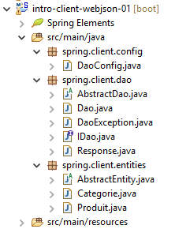 |
- o pacote [spring.client.config] contém a configuração Spring da camada [DAO];
- o pacote [spring.client.dao] contém a implementação da camada [DAO];
- o pacote [spring.client.entities] contém os objetos trocados com o serviço web / jSON;
13.6.3.1. Configuration
 |
A classe [DaoConfig] realiza a configuração Spring da camada [DAO]. O seu código é o seguinte:
package spring.client.config;
import org.springframework.context.annotation.Bean;
import org.springframework.context.annotation.ComponentScan;
import org.springframework.context.annotation.Configuration;
import org.springframework.http.client.HttpComponentsClientHttpRequestFactory;
import org.springframework.web.client.RestTemplate;
import com.fasterxml.jackson.databind.ObjectMapper;
import com.fasterxml.jackson.databind.ser.impl.SimpleBeanPropertyFilter;
import com.fasterxml.jackson.databind.ser.impl.SimpleFilterProvider;
@ComponentScan({ "spring.client.dao" })
public class DaoConfig {
// constantes
static private final int TIMEOUT = 1000;
static private final String URL_WEBJSON = "http://localhost:8080";
@Bean
public RestTemplate restTemplate(int timeout) {
// criação do componente RestTemplate
HttpComponentsClientHttpRequestFactory factory = new HttpComponentsClientHttpRequestFactory();
RestTemplate restTemplate = new RestTemplate(factory);
// tempo limite das trocas
factory.setConnectTimeout(timeout);
factory.setReadTimeout(timeout);
// resultado
return restTemplate;
}
@Bean
public int timeout() {
return TIMEOUT;
}
@Bean
public String urlWebJson() {
return URL_WEBJSON;
}
// filtros jSON
@Bean(name = "jsonMapper")
public ObjectMapper jsonMapper() {
return new ObjectMapper();
}
@Bean(name = "jsonMapperCategorieWithProduits")
public ObjectMapper jsonMapperCategorieWithProduits() {
// mapeador jSON
ObjectMapper mapper = new ObjectMapper();
// filtros
mapper.setFilters(
new SimpleFilterProvider().addFilter("jsonFilterCategorie", SimpleBeanPropertyFilter.serializeAllExcept())
.addFilter("jsonFilterProduit", SimpleBeanPropertyFilter.serializeAllExcept("categorie")));
// resultado
return mapper;
}
@Bean(name = "jsonMapperProduitWithCategorie")
public ObjectMapper jsonMapperProduitWithCategorie() {
// mapeador jSON
ObjectMapper mapper = new ObjectMapper();
// filtros
mapper.setFilters(
new SimpleFilterProvider().addFilter("jsonFilterProduit", SimpleBeanPropertyFilter.serializeAllExcept())
.addFilter("jsonFilterCategorie", SimpleBeanPropertyFilter.serializeAllExcept("produits")));
// resultado
return mapper;
}
@Bean(name = "jsonMapperCategorieWithoutProduits")
public ObjectMapper jsonMapperCategorieWithoutProduits() {
// mapeador jSON
ObjectMapper mapper = new ObjectMapper();
// filtros
mapper.setFilters(new SimpleFilterProvider().addFilter("jsonFilterCategorie",
SimpleBeanPropertyFilter.serializeAllExcept("produits")));
// resultado
return mapper;
}
@Bean(name = "jsonMapperProduitWithoutCategorie")
public ObjectMapper jsonMapperProduitWithoutCategorie() {
// mapeador jSON
ObjectMapper mapper = new ObjectMapper();
// filtros
mapper.setFilters(new SimpleFilterProvider().addFilter("jsonFilterProduit",
SimpleBeanPropertyFilter.serializeAllExcept("categorie")));
// resultado
return mapper;
}
}
- linha 13: a classe é uma classe de configuração do Spring — os componentes do Spring devem ser procurados no pacote [spring.client.dao];
- linha 17: define-se um timeout de um segundo (1000 ms);
- linhas 32-35: o bean que devolve este valor;
- linha 18: o URL do serviço web / jSON;
- linhas 37-40: o bean que devolve este valor;
- linhas 20-30: a configuração da classe [RestTemplate] que assegura as trocas com o serviço web / jSON. Quando não é necessário configurá-la, pode-se referir-se a ela no código simplesmente como [new RestTemplate()]. Neste caso, pretendemos definir o timeout para as trocas de dados com o serviço web / jSON. O bean [timeout] da linha 36 é passado como parâmetro do método [restTemplate] da linha 24;
- linha 23: o componente [HttpComponentsClientHttpRequestFactory] é o componente que nos permite definir o timeout das trocas (linhas 29-30);
- linha 24: a classe [RestTemplate] é construída com este componente. Como se baseia neste para comunicar com o serviço web / jSON, as trocas serão efetivamente submetidas ao timeout;
- o cliente e o servidor irão trocar linhas de texto. Um conversor encarrega-se de serializar um objeto em texto e, inversamente, de deserializar um texto em objeto. Podem existir vários conversores associados à classe [RestTemplate] e o conversor escolhido num determinado momento depende dos cabeçalhos HTTP enviados pelo servidor. Neste caso, não teremos nenhum conversor. Assim, o componente [RestTemplate] não tentará converter, de forma alguma, os dois elementos seguintes:
- o texto enviado;
- o texto recebido em resposta;
Estes textos serão cadeias jSON que serão, portanto, mantidas tal como estão pelo componente [RestTemplate]. Seremos nós, os programadores, que faremos as serializações/deserializações jSON necessárias. Isto porque os filtros a aplicar ao valor enviado e à resposta recebida podem ser diferentes e a experiência mostra que é mais fácil geri-los por conta própria do que tentar configurar o componente [RestTemplate] para que utilize o conversor correto jSON;
- linhas 42-92: definem filtros jSON. São os mesmos que os do servidor apresentados e explicados no parágrafo 13.5.3.1;
- linhas 43-46: um mapeador jSON sem filtros;
- linhas 64-68: um mapeador jSON para obter uma categoria sem os respetivos produtos;
- linhas 48-58: um mapeador jSON para obter uma categoria com os seus produtos;
- linhas 83-92: um mapeador jSON para obter um produto sem a sua categoria;
- linhas 60-70: um mapeador jSON para obter um produto com a sua categoria;
Todos estes beans estarão disponíveis nos códigos da camada [DAO], bem como no teste Junit.
13.6.3.2. As entidades
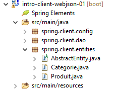 |
As entidades manipuladas pela camada [DAO] são aquelas que esta troca com o serviço web /jSON. Trata-se dos artigos e dos produtos. Do lado do servidor, estas entidades tinham anotações de persistência JPA. Aqui, essas anotações foram removidas. Reproduzimos o código das entidades a título de recordatório:
[AbstractEntity]
package spring.client.entities;
import com.fasterxml.jackson.core.JsonProcessingException;
import com.fasterxml.jackson.databind.ObjectMapper;
public abstract class AbstractEntity {
// propriedades
protected Long id;
protected Long version;
// construtores
public AbstractEntity() {
}
public AbstractEntity(Long id, Long version) {
this.id = id;
this.version = version;
}
// redefinição de [equals] e [hashcode]
@Override
public int hashCode() {
return (id != null ? id.hashCode() : 0);
}
@Override
public boolean equals(Object entity) {
if (!(entity instanceof AbstractEntity)) {
return false;
}
String class1 = this.getClass().getName();
String class2 = entity.getClass().getName();
if (!class2.equals(class1)) {
return false;
}
AbstractEntity other = (AbstractEntity) entity;
return id != null && this.id == other.id.longValue();
}
// assinatura jSON
public String toString() {
ObjectMapper mapper = new ObjectMapper();
try {
return mapper.writeValueAsString(this);
} catch (JsonProcessingException e) {
e.printStackTrace();
return null;
}
}
// getters e setters
...
}
[Categorie]
package spring.client.entities;
import java.util.HashSet;
import java.util.Set;
import com.fasterxml.jackson.annotation.JsonFilter;
@JsonFilter("jsonFilterCategorie")
public class Categorie extends AbstractEntity {
// propriedades
private String nom;
// produtos associados
public Set<Produit> produits = new HashSet<Produit>();
// construtores
public Categorie() {
}
public Categorie(String nom) {
this.nom = nom;
}
// métodos
public void addProduit(Produit produit) {
// adiciona-se o produto
produits.add(produit);
// define-se a sua categoria
produit.setCategorie(this);
}
// getters e setters
...
}
[Produit]
package spring.webjson.client.entities;
import com.fasterxml.jackson.annotation.JsonFilter;
@JsonFilter("jsonFilterProduit")
public class Produit extends AbstractEntity {
// o nome
private String nom;
// o n.º da categoria
private Long idCategorie;
// o preço
private double prix;
// a descrição
private String description;
// a categoria
private Categorie categorie;
// fabricantes
public Produit() {
}
public Produit(String nom, double prix, String description) {
this.nom = nom;
this.prix = prix;
this.description = description;
}
// getters e setters
...
}
13.6.3.3. A classe [DaoException]
 |
Quando a camada [DAO] detetar um erro, lançará uma exceção do tipo [DaoException]. Esta classe é a utilizada no lado do servidor e descrita no parágrafo 11.3.7.
13.6.3.4. A interface da camada [DAO]
 |
A camada [DAO] apresenta a interface [IDao] descrita no parágrafo 11.3.7.
package spring.client.dao;
import java.util.List;
import spring.client.entities.Categorie;
import spring.client.entities.Produit;
public interface IDao {
// inserção de uma lista de produtos
public List<Produit> addProduits(List<Produit> produits);
// eliminação de todos os produtos
public void deleteAllProduits();
// atualização de uma lista de produtos
public List<Produit> updateProduits(List<Produit> produits);
// obter todos os produtos
public List<Produit> getAllProduits();
// inserção de uma lista de categorias
public List<Categorie> addCategories(List<Categorie> categories);
// eliminação de todas as categorias
public void deleteAllCategories();
// atualização de uma lista de categorias
public List<Categorie> updateCategories(List<Categorie> categories);
// obter todas as categorias
public List<Categorie> getAllCategories();
// um produto específico
public Produit getProduitByIdWithCategorie(Long idProduit);
public Produit getProduitByIdWithoutCategorie(Long idProduit);
public Produit getProduitByNameWithCategorie(String nom);
public Produit getProduitByNameWithoutCategorie(String nom);
// uma categoria específica
public Categorie getCategorieByIdWithProduits(Long idCategorie);
public Categorie getCategorieByIdWithoutProduits(Long idCategorie);
public Categorie getCategorieByNameWithProduits(String nom);
public Categorie getCategorieByNameWithoutProduits(String nom);
}
13.6.3.5. A resposta do serviço web / jSON
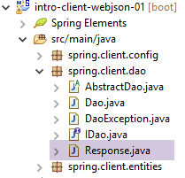 |
Vimos que todas as URL do serviço web / jSON devolviam um tipo [Response] definido no parágrafo 13.5.5.3. Repetimos aqui esta classe:
package spring.client.dao;
import java.util.List;
public class Response<T> {
// ----------------- propriedades
// estado da operação
private int status;
// eventuais mensagens de erro
private List<String> messages;
// o corpo da resposta
private T body;
// construtores
public Response() {
}
public Response(int status, List<String> messages, T body) {
this.status = status;
this.messages = messages;
this.body = body;
}
// getters e setters
...
}
13.6.3.6. Implementação das trocas com o serviço web / jSON
 |
A classe [AbstractDao] implementa as trocas de dados com o serviço web / jSON:
package spring.client.dao;
import java.net.URI;
import java.net.URISyntaxException;
import org.springframework.beans.factory.annotation.Autowired;
import org.springframework.core.ParameterizedTypeReference;
import org.springframework.http.MediaType;
import org.springframework.http.RequestEntity;
import org.springframework.web.client.RestTemplate;
public abstract class AbstractDao {
// dados
@Autowired
protected RestTemplate restTemplate;
@Autowired
protected String urlServiceWebJson;
// pedido genérico
protected String getResponse(String url, String jsonPost) {
// URL: URL para contacto
// jsonPost: o valor jSON a enviar
try {
// execução da solicitação
RequestEntity<?> request;
if (jsonPost != null) {
// solicitação POST
request = RequestEntity.post(new URI(String.format("%s%s", urlServiceWebJson, url)))
.header("Content-Type", "application/json").accept(MediaType.APPLICATION_JSON).body(jsonPost);
} else {
// solicitação GET
request = RequestEntity.get(new URI(String.format("%s%s", urlServiceWebJson, url)))
.accept(MediaType.APPLICATION_JSON).build();
}
// executa-se a consulta
return restTemplate.exchange(request, new ParameterizedTypeReference<String>() {
}).getBody();
} catch (URISyntaxException e1) {
throw new DaoException(20, e1);
} catch (RuntimeException e2) {
throw new DaoException(21, e2);
}
}
}
- linhas 15-16: injeção do componente [RestTemplate], que assegura a comunicação com o servidor;
- linhas 17-18: injeção do URL do serviço web / jSON;
A implementação dos métodos de comunicação com o servidor está factorizada no método [getResponse]:
- linha 21: o método recebe 2 parâmetros:
- [url]: o URL solicitado;
- [jsonPost]: a cadeia jSON a enviar, null caso contrário. Se for [jsonPost==null], o pedido do URL é feito com um GET; caso contrário, com um POST;
- linha 38: a instrução que envia a solicitação ao servidor e recebe a sua resposta. O componente [RestTemplate] oferece um número significativo de métodos de comunicação com o servidor. Escolhemos aqui o método [exchange], mas existem outros;
- linhas 27-36: temos de construir a solicitação do tipo [RequestEntity]. Esta varia consoante se utilize um GET ou um POST para efetuar a solicitação;
- linhas 30-31: a consulta para um GET. A classe [RequestEntity] disponibiliza métodos estáticos para criar as consultas GET, POST, HEAD,... O método [RequestEntity.get] permite criar uma consulta GET encadeando os diferentes métodos que a constroem:
- o método [RequestEntity.get] aceita como parâmetro o URL de destino na forma de uma instância URI,
- o método [accept] permite definir os elementos do cabeçalho HTTP [Accept]. Aqui, indicamos que aceitamos o tipo [application/json] que o servidor irá enviar;
- o método [build] utiliza estas diferentes informações para construir o tipo [RequestEntity] da solicitação;
- linhas 34-35: a solicitação para um POST. O método [RequestEntity.post] permite criar uma solicitação POST encadeando os diferentes métodos que a constroem:
- o método [RequestEntity.post] aceita como parâmetro o URL de destino na forma de uma instância URI,
- o método [header] define um cabeçalho HTTP. Aqui, enviamos ao servidor o cabeçalho [Content-Type: application/json] para lhe indicar que o valor enviado chegará na forma de uma cadeia jSON;
- o método [accept] permite indicar que aceitamos o tipo [application/json] que o servidor irá enviar;
- o método [body] define o valor enviado. Este é o quarto parâmetro do método genérico [getResponse] (linha 1);
- linha 38: o método [RestTemplate].exchange devolve um tipo [ResponseEntity<String>] que encapsula a totalidade da resposta do servidor: cabeçalhos HTTP e corpo do documento. O método [ResponseEntity].getBody() permite obter esse corpo que representa a resposta do servidor, neste caso uma cadeia de caracteres;
13.6.3.7. Implementação da interface [IDao]
 |
A classe [Dao] implementa a interface [IDao]:
package spring.client.dao;
import java.io.IOException;
import java.util.List;
import org.springframework.beans.factory.annotation.Autowired;
import org.springframework.beans.factory.annotation.Qualifier;
import org.springframework.context.ApplicationContext;
import org.springframework.stereotype.Component;
import com.fasterxml.jackson.core.type.TypeReference;
import com.fasterxml.jackson.databind.ObjectMapper;
import spring.client.entities.Categorie;
import spring.client.entities.Produit;
@Component
public class Dao extends AbstractDao implements IDao {
@Autowired
private ApplicationContext context;
// filtros jSON
@Autowired
@Qualifier("jsonMapper")
private ObjectMapper jsonMapper;
@Autowired
@Qualifier("jsonMapperCategorieWithProduits")
private ObjectMapper jsonMapperCategorieWithProduits;
@Autowired
@Qualifier("jsonMapperProduitWithCategorie")
private ObjectMapper jsonMapperProduitWithCategorie;
@Autowired
@Qualifier("jsonMapperCategorieWithoutProduits")
private ObjectMapper jsonMapperCategorieWithoutProduits;
@Autowired
@Qualifier("jsonMapperProduitWithoutCategorie")
private ObjectMapper jsonMapperProduitWithoutCategorie;
@Override
public List<Produit> addProduits(List<Produit> produits) {
// ----------- adicionar produtos (sem a respetiva categoria)
...
}
- linha 17: a classe [Dao] é um componente Spring, no qual é possível injetar outros componentes Spring;
- linha 18: a classe [Dao] estende a classe [AbstractDao] que acabámos de ver e implementa a interface [IDao];
- linhas 20-21: injetamos o contexto Spring para ter acesso aos seus beans;
- linhas 24-38: injeção dos mapeadores jSON definidos na classe [AppConfig] apresentada no parágrafo 13.6.2;
As implementações dos diferentes métodos da interface [IDao] seguem todas o mesmo esquema. Vamos apresentar dois métodos, um baseado numa operação [POST] e outro numa operação [GET].
Um exemplo de [GET]: [getCategorieByNameWithProduits]
@Override
public Categorie getCategorieByNameWithProduits(String nom) {
// ----------- obter uma categoria designada pelo seu nome, com os respetivos produtos
try {
// consulta
Response<Categorie> response = jsonMapperCategorieWithProduits.readValue(
getResponse(String.format("/getCategorieByNameWithProduits/%s", nom), null),
new TypeReference<Response<Categorie>>() {
});
// erro?
if (response.getStatus() != 0) {
// é lançada 1 exceção
throw new DaoException(response.getStatus(), response.getMessages());
} else {
// retorna o corpo da resposta do servidor
return response.getBody();
}
} catch (DaoException e1) {
throw e1;
} catch (RuntimeException | IOException e2) {
throw new DaoException(113, e2);
}
}
- linha 7: é chamado o método [getResponse] da classe pai. É este método que assegura as comunicações com o serviço web / jSON. Os seus parâmetros são os seguintes:
getResponse(String.format("/getCategorieByNameWithProduits/%s", nom), null)
- (continuação)
- o URL do serviço consultado [/getCategorieByNameWithProduits/nom];
- o valor enviado. Neste caso, não há nenhum;
O método [getResponse] devolve um tipo String que corresponde à resposta jSON enviada pelo servidor. Deserializamos esta resposta jSON da seguinte forma:
jsonMapperCategorieWithProduits.readValue(
jsonResponse,
new TypeReference<Response<Categorie>>() {
});
porque a cadeia jSON é a serialização de um tipo [Response<Categorie>];
- linhas 11-17: verifica-se o estado da resposta. Se o estado for diferente de 0, significa que ocorreu um erro do lado do servidor. Nesse caso, lança-se uma exceção (linha 13), utilizando as informações contidas na resposta (estado e lista de mensagens de erro);
- linha 16: se não tiver ocorrido nenhum erro do lado do servidor, devolve-se o corpo do tipo [Response<Categorie>], ou seja, a categoria solicitada;
- linhas 18-19: trata-se da exceção lançada na linha 16;
- linhas 20-22: tratam todas as outras exceções;
Um exemplo de [POST]: [addCategories]
@Override
public List<Categorie> addCategories(List<Categorie> categories) {
// ----------- adicionar categorias (com os respetivos produtos)
try {
// pedido
Response<List<Categorie>> response = jsonMapperCategorieWithProduits.readValue(
getResponse("/addCategories", jsonMapperCategorieWithProduits.writeValueAsString(categories)),
new TypeReference<Response<List<Categorie>>>() {
});
// erro?
if (response.getStatus() != 0) {
// lança-se uma exceção
throw new DaoException(response.getStatus(), response.getMessages());
} else {
// retorna o corpo da resposta do servidor
return response.getBody();
}
} catch (DaoException e1) {
throw e1;
} catch (RuntimeException | IOException e2) {
throw new DaoException(104, e2);
}
}
- linha 2: o método [addCategories] serve para persistir na base de dados as categorias passadas como parâmetros. Este método enriquece essas mesmas categorias com as suas chaves primárias. Se as categorias forem passadas juntamente com produtos, estes também são persistidos;
- linha 7: chama-se o método [getResponse] do pai para efetuar as trocas de dados com o serviço web / jSON;
- o primeiro parâmetro é o URL [/addCategories];
- o segundo parâmetro é o valor enviado, neste caso a lista de categorias a conservar;
getResponse("/addCategories", jsonMapperCategorieWithProduits.writeValueAsString(categories))
A cadeia jSON obtida é, em seguida, deserializada para obter o tipo [Response<List<Categorie>] esperado:
Response<List<Categorie>> response = jsonMapperCategorieWithProduits.readValue(
jsonResponse,
new TypeReference<Response<List<Categorie>>>() {
});
- linhas 11-17: gestão da resposta do servidor (erro ou não);
- linhas 20-22: gestão de exceções;
Todos os outros métodos seguem o modelo dos dois métodos apresentados.
13.6.4. O teste JUnit
Voltemos à arquitetura cliente/servidor que está a ser desenvolvida:
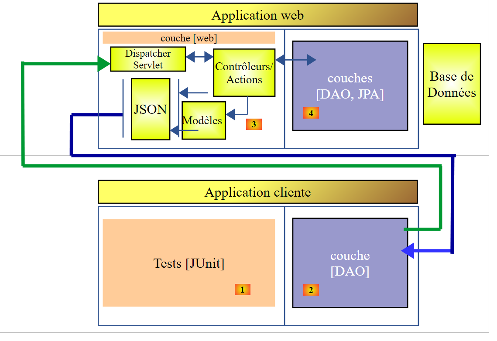 |
Construímos uma camada [DAO] [2] com a mesma interface que a camada [DAO] [4]. Para testar a camada [DAO] [2], pode-se, portanto, utilizar o teste JUnit que serviu para testar a camada [DAO] [4]. Recorde-se que este é o seguinte:
 |
package spring.client.junit;
import java.util.ArrayList;
import java.util.List;
import java.util.Set;
import org.junit.Assert;
import org.junit.Before;
import org.junit.Test;
import org.junit.runner.RunWith;
import org.springframework.beans.BeansException;
import org.springframework.beans.factory.annotation.Autowired;
import org.springframework.beans.factory.annotation.Qualifier;
import org.springframework.boot.test.SpringApplicationConfiguration;
import org.springframework.test.context.junit4.SpringJUnit4ClassRunner;
import com.fasterxml.jackson.core.JsonProcessingException;
import com.fasterxml.jackson.databind.ObjectMapper;
import com.google.common.collect.Lists;
import spring.client.config.DaoConfig;
import spring.client.dao.DaoException;
import spring.client.dao.IDao;
import spring.client.entities.Categorie;
import spring.client.entities.Produit;
@SpringApplicationConfiguration(classes = DaoConfig.class)
@RunWith(SpringJUnit4ClassRunner.class)
public class Test01 {
// camada [DAO]
@Autowired
private IDao dao;
// filtros jSON
@Autowired
@Qualifier("jsonMapper")
private ObjectMapper jsonMapper;
@Autowired
@Qualifier("jsonMapperCategorieWithProduits")
private ObjectMapper jsonMapperCategorieWithProduits;
@Autowired
@Qualifier("jsonMapperProduitWithCategorie")
private ObjectMapper jsonMapperProduitWithCategorie;
@Autowired
@Qualifier("jsonMapperCategorieWithoutProduits")
private ObjectMapper jsonMapperCategorieWithoutProduits;
@Autowired
@Qualifier("jsonMapperProduitWithoutCategorie")
private ObjectMapper jsonMapperProduitWithoutCategorie;
@Before
public void cleanAndFill() {
// limpa-se a base de dados antes de cada teste
log("Vidage de la base de données", 1);
// esvazia-se a tabela [CATEGORIES] — em cadeia, a tabela [PRODUITS] será esvaziada
dao.deleteAllCategories();
// --------------------------------------------------------------------------------------
log("Remplissage de la base", 1);
// preenchem-se as tabelas
List<Categorie> categories = new ArrayList<Categorie>();
for (int i = 0; i < 2; i++) {
Categorie categorie = new Categorie(String.format("categorie%d", i));
for (int j = 0; j < 5; j++) {
categorie.addProduit(new Produit(String.format("produit%d%d", i, j), 100 * (1 + (double) (i * 10 + j) / 100),
String.format("desc%d%d", i, j)));
}
categories.add(categorie);
}
// adição da categoria — por efeito em cadeia, os produtos também serão inseridos
categories = dao.addCategories(categories);
}
@Test
public void showDataBase() throws BeansException, JsonProcessingException {
// lista de categorias
log("Liste des catégories", 2);
List<Categorie> categories = dao.getAllCategories();
affiche(categories, jsonMapperCategorieWithoutProduits);
// lista de produtos
log("Liste des produits", 2);
List<Produit> produits = dao.getAllProduits();
affiche(produits, jsonMapperProduitWithoutCategorie);
// algumas verificações
Assert.assertEquals(2, categories.size());
Assert.assertEquals(10, produits.size());
Categorie categorie = findCategorieByName("categorie0", categories);
Assert.assertNotNull(categorie);
Produit produit = findProduitByName("produit03", produits);
Assert.assertNotNull(produit);
Long idCategorie = produit.getIdCategorie();
Assert.assertEquals(categorie.getId(), idCategorie);
}
@Test
public void getCategorieByNameWithProduits() {
log("getCategorieByNameWithProduits", 1);
Categorie categorie1 = dao.getCategorieByNameWithProduits("categorie1");
Assert.assertNotNull(categorie1);
Assert.assertEquals(5, categorie1.getProduits().size());
}
@Test
public void getCategorieByNameWithoutProduits() {
log("getCategorieByNameWithoutProduits", 1);
Categorie categorie1 = dao.getCategorieByNameWithoutProduits("categorie1");
Assert.assertNotNull(categorie1);
Assert.assertEquals("categorie1", categorie1.getNom());
}
@Test
public void getCategorieByIdWithProduits() {
log("getCategorieByIdWithProduits", 1);
Categorie categorie1 = dao.getCategorieByNameWithProduits("categorie1");
Categorie categorie2 = dao.getCategorieByIdWithProduits(categorie1.getId());
Assert.assertNotNull(categorie2);
Assert.assertEquals(categorie1.getId(), categorie2.getId());
Assert.assertEquals(categorie1.getNom(), categorie2.getNom());
}
@Test
public void getCategorieByIdWithoutProduits() {
log("getCategorieByIdWithoutProduits", 1);
Categorie categorie1 = dao.getCategorieByNameWithProduits("categorie1");
Categorie categorie2 = dao.getCategorieByIdWithoutProduits(categorie1.getId());
Assert.assertNotNull(categorie2);
Assert.assertEquals(categorie1.getNom(), categorie2.getNom());
}
@Test
public void getProduitByNameWithCategorie() {
log("getProduitByNameWithCategorie", 1);
Produit produit = dao.getProduitByNameWithCategorie("produit03");
Assert.assertNotNull(produit);
Assert.assertNotNull(produit.getCategorie());
}
@Test
public void getProduitByNameWithoutCategorie() {
log("getProduitByNameWithoutCategorie", 1);
Produit produit = dao.getProduitByNameWithoutCategorie("produit03");
Assert.assertNotNull(produit);
Assert.assertEquals("produit03", produit.getNom());
}
@Test
public void getProduitByIdWithCategorie() {
log("getProduitByNameWithCategorie", 1);
Produit produit = dao.getProduitByNameWithCategorie("produit03");
Produit produit2 = dao.getProduitByIdWithCategorie(produit.getId());
Assert.assertNotNull(produit2);
Assert.assertEquals(produit2.getNom(), produit.getNom());
Assert.assertEquals(produit2.getId(), produit.getId());
Assert.assertEquals(produit.getCategorie().getId(), produit2.getCategorie().getId());
}
@Test
public void getProduitByIdWithoutCategorie() {
log("getProduitByIdWithoutCategorie", 1);
Produit produit = dao.getProduitByNameWithCategorie("produit03");
Produit produit2 = dao.getProduitByIdWithoutCategorie(produit.getId());
Assert.assertNotNull(produit2);
Assert.assertEquals(produit2.getNom(), produit.getNom());
Assert.assertEquals(produit2.getId(), produit.getId());
}
@Test
public void doInsertsInTransaction() {
log("Ajout d'une catégorie [cat1] avec deux produits de même nom", 1);
// procedemos à inserção
Categorie categorie = new Categorie("cat1");
categorie.addProduit(new Produit("x", 1.0, ""));
categorie.addProduit(new Produit("x", 1.0, ""));
// adição da categoria - os produtos serão também inseridos em cadeia
try {
categorie = dao.addCategories(Lists.newArrayList(categorie)).get(0);
} catch (DaoException e) {
show("Les erreurs suivantes se sont produites :", e.getErreurs());
}
// verificações
List<Categorie> categories = dao.getAllCategories();
Assert.assertEquals(2, categories.size());
List<Produit> produits = dao.getAllProduits();
Assert.assertEquals(10, produits.size());
}
@Test
public void updateDataBase() {
log("Mise à jour du prix des produits de [categorie1]", 1);
Categorie categorie1 = dao.getCategorieByNameWithProduits("categorie1");
Categorie categorie1Saved = dao.getCategorieByNameWithProduits("categorie1");
Set<Produit> produits = categorie1.getProduits();
for (Produit produit : produits) {
produit.setPrix(1.1 * produit.getPrix());
}
List<Produit> produits2 = Lists.newArrayList(produits);
produits2 = dao.updateProduits(produits2);
// verificações
List<Produit> produitsSaved = Lists.newArrayList(categorie1Saved.getProduits());
for (Produit produit2 : produits2) {
Produit produit = findProduitByName(produit2.getNom(), produitsSaved);
Assert.assertEquals(produit2.getPrix(), produit.getPrix() * 1.1, 1e-6);
}
}
@Test
public void addProduits() throws BeansException, JsonProcessingException {
log("Ajout de deux produits de catégorie [categorie0]", 1);
Categorie categorie0 = dao.getCategorieByNameWithoutProduits("categorie0");
Long idCategorie = categorie0.getId();
Produit p1 = new Produit("x", 1, "");
p1.setIdCategorie(idCategorie);
p1.setCategorie(categorie0);
Produit p2 = new Produit("y", 1, "");
p2.setIdCategorie(idCategorie);
p2.setCategorie(categorie0);
List<Produit> produits = new ArrayList<Produit>();
produits.add(p1);
produits.add(p2);
produits = dao.addProduits(produits);
// verificação
affiche(produits, jsonMapperProduitWithoutCategorie);
}
// -------------- métodos privados
private Produit findProduitByName(String nom, List<Produit> produits) {
for (Produit produit : produits) {
if (produit.getNom().equals(nom)) {
return produit;
}
}
return null;
}
private Categorie findCategorieByName(String nom, List<Categorie> categories) {
for (Categorie categorie : categories) {
if (categorie.getNom().equals(nom)) {
return categorie;
}
}
return null;
}
// exibição de um elemento do tipo T
static private <T> void affiche(T element, ObjectMapper jsonMapper) throws JsonProcessingException {
System.out.println(jsonMapper.writeValueAsString(element));
}
// exibição de uma lista de elementos do tipo T
static private <T> void affiche(List<T> elements, ObjectMapper jsonMapper) throws JsonProcessingException {
for (T element : elements) {
affiche(element, jsonMapper);
}
}
private static void log(String message, int mode) {
// exibe mensagem
String toPrint = null;
switch (mode) {
case 1:
toPrint = String.format("%s --------------------------------", message);
break;
case 2:
toPrint = String.format("-- %s", message);
break;
}
System.out.println(toPrint);
}
private static void show(String title, List<String> messages) {
// título
System.out.println(String.format("%s : ", title));
// mensagens
for (String message : messages) {
System.out.println(String.format("- %s", message));
}
}
}
A sua execução foi bem-sucedida e apresenta os seguintes resultados na consola:
Vidage de la base de données --------------------------------
Remplissage de la base --------------------------------
Ajout de deux produits de catégorie [categorie0] --------------------------------
{"id":6285,"version":0,"nom":"x","idCategorie":1319,"prix":1.0,"description":""}
{"id":6286,"version":0,"nom":"y","idCategorie":1319,"prix":1.0,"description":""}
Vidage de la base de données --------------------------------
Remplissage de la base --------------------------------
Mise à jour du prix des produits de [categorie1] --------------------------------
Vidage de la base de données --------------------------------
Remplissage de la base --------------------------------
getCategorieByIdWithoutProduits --------------------------------
Vidage de la base de données --------------------------------
Remplissage de la base --------------------------------
getProduitByNameWithoutCategorie --------------------------------
Vidage de la base de données --------------------------------
Remplissage de la base --------------------------------
getCategorieByNameWithProduits --------------------------------
Vidage de la base de données --------------------------------
Remplissage de la base --------------------------------
getCategorieByNameWithoutProduits --------------------------------
Vidage de la base de données --------------------------------
Remplissage de la base --------------------------------
getProduitByNameWithCategorie --------------------------------
Vidage de la base de données --------------------------------
Remplissage de la base --------------------------------
getProduitByNameWithCategorie --------------------------------
Vidage de la base de données --------------------------------
Remplissage de la base --------------------------------
getProduitByIdWithoutCategorie --------------------------------
Vidage de la base de données --------------------------------
Remplissage de la base --------------------------------
-- Liste des catégories
{"id":1337,"version":0,"nom":"categorie0"}
{"id":1338,"version":0,"nom":"categorie1"}
-- Liste des produits
{"id":6367,"version":0,"nom":"produit00","idCategorie":1337,"prix":100.0,"description":"desc00"}
{"id":6368,"version":0,"nom":"produit01","idCategorie":1337,"prix":101.0,"description":"desc01"}
{"id":6369,"version":0,"nom":"produit02","idCategorie":1337,"prix":102.0,"description":"desc02"}
{"id":6370,"version":0,"nom":"produit03","idCategorie":1337,"prix":103.0,"description":"desc03"}
{"id":6371,"version":0,"nom":"produit04","idCategorie":1337,"prix":104.0,"description":"desc04"}
{"id":6372,"version":0,"nom":"produit10","idCategorie":1338,"prix":110.0,"description":"desc10"}
{"id":6373,"version":0,"nom":"produit11","idCategorie":1338,"prix":111.0,"description":"desc11"}
{"id":6374,"version":0,"nom":"produit12","idCategorie":1338,"prix":112.0,"description":"desc12"}
{"id":6375,"version":0,"nom":"produit13","idCategorie":1338,"prix":113.0,"description":"desc13"}
{"id":6376,"version":0,"nom":"produit14","idCategorie":1338,"prix":114.0,"description":"desc14"}
Vidage de la base de données --------------------------------
Remplissage de la base --------------------------------
getCategorieByIdWithProduits --------------------------------
Vidage de la base de données --------------------------------
Remplissage de la base --------------------------------
Ajout d'une catégorie [cat1] avec deux produits de même nom --------------------------------
Les erreurs suivantes se sont produites :
- org.hibernate.exception.ConstraintViolationException: could not execute statement
- could not execute statement
- Duplicate entry 'x' for key 'NOM'
11:24:37.650 [Thread-1] INFO o.s.c.a.AnnotationConfigApplicationContext - Closing org.springframework.context.annotation.AnnotationConfigApplicationContext@f8c1ddd: startup date [Fri Nov 20 11:24:34 CET 2015]; root of context hierarchy